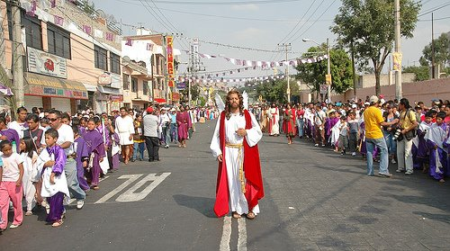
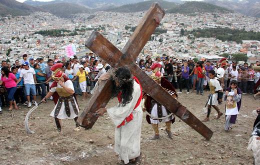
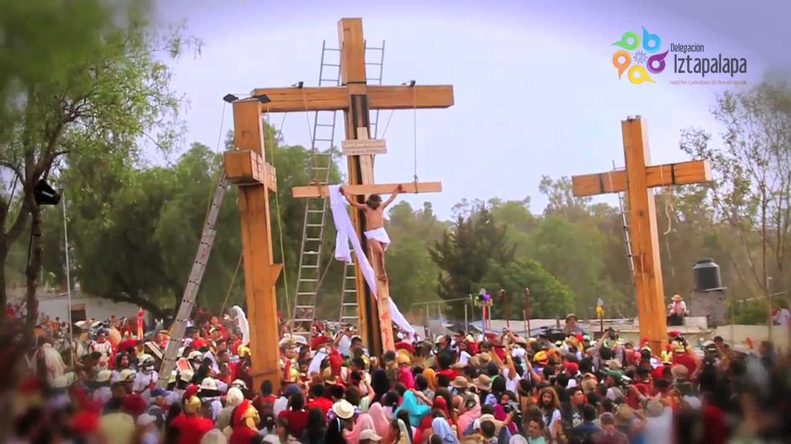

Iztapalapa, una de las 16 delegaciones que constituyen el Distrito Federal, Tiene en el Cerro de la Estrella, en sus templos, plazas y jardines de Ia cabecera, los espacios sagrados donde se escenifica cada año la representación ritual por excelencia. Los moradores de los ocho barrios: La Asunción, San Ignacio, Santa Bárbara, San Lucas, San Pablo, San Miguel, San Pedro y San José, En los barrios se eligen a los mayordomos; éstos organizan las fiestas. La ceremonia, fiesta y representación de la Semana Santa, vuelca lo popular hacia lo sagrado, en un hecho que es por un lado civil y por otro religioso. Las autoridades eclesiásticas apoyan estos actos masivos, aunque no los aceptan como totalmente litúrgicos; más bien "dejan hacer" al pueblo, que escenifica desde hace más de 150 años Ia Pasión de Cristo.

Los episodios más importantes tienen lugar el Domingo de Ramos con la Procesión y la Bendición de las Palmas; el Jueves Santo en el Jardín Cuitláhuac, y el Viernes Santo con la secuencia de la sentencia, los azotes, la coronación de espinas y el Vía Crucis que culmina en el Cerro de la Estrella con la crucifixión. Al conocerse los días en que va a caer la Semana Mayor, comienzan los preparativos y se selecciona a los protagonistas del drama, quienes inician los ensayos desde enero. EI comité organizador también tiene que ver con los escenarios y la coordinación de los movimientos de los personajes en los diferentes lugares donde hay representaciones. Así mismo, concerta con las autoridades de la Delegación la suspensión deI tráfico a determinadas horas en los días señalados, las calles por donde pasarán las procesiones.

Los papeles ya no se heredan familiarmente como se hacía en otras épocas. Soldados romanos y judíos, integrantes del Sanedrín, vírgenes del pueblo, mujeres de Herodes, romanas, se eligen de entre los habitantes de los diferentes barrios. Los nazarenos son aquellos que por promesa, manda o voluntad propia, se imponen la carga de una cruz a lo largo de todo el trayecto del Vía Crucis, atrás del Cristo. Los actores rivalizan por los papeles principales. Los criterios para seleccionar a los personajes son diversos, y los más estrictos son para designar a los actores principales: los apóstoles y la Virgen María. Cristo, por ejemplo, debe ser fuerte para soportar el recorrido cargando la cruz, soltero, originario de Iztapalapa, de familia cristiana, y poseer un físico que concuerde con la idea que la población tiene de Jesús. Él y otros personajes se dejan crecer el pelo, se lo tiñen.

El Domingo de Ramos, las casas y las calles se llenan de flores, las campanas se echan a vuelo, y un ángel con un niño inician la procesión que avanza lentamente. Los cientos de nazarenos llevan adornos de bandas blancas sobre las túnicas moradas; las vírgenes y las mujeres del pueblo adornan sus cabezas con coronas de flores, la Virgen, la Magdalena, llevan atuendos únicos. Por momentos Iztapalapa se transforma en Jerusalén, la multitud se dirige al barrio de San Lucas para que el sacerdote bendiga las palmas, los ramos de manzanilla, romero y laurel (éstas se guardan, pues la gente les atribuye poderes curativos). Hay risas cuando se reciben en la cara las gotas de agua bendita; en el atrio se mezclan los olores de los puestos de comida, los gritos de los vendedores, la música de los juegos mecánicos: el pueblo mezcla lo bíblico con lo actual.
El Jueves Santo, los adornos en las calles son de color blanco y morado; los actores llegan al lugar donde han ensayado; llena de flores y frutas está la cárcel que Cristo ocupará más tarde. De una casa, sale la procesión que inician el niño y el ángel, después las vírgenes, Jesús, los nazarenos, los sacerdotes y dignatarios romanos, flanqueados por los soldados. La procesión recorre las calles de los ocho barrios, y llega hasta la iglesia del Señor de la Cuevita, donde los presentes quieren tocar la urna y pedir gracias. Los nazarenos, que suman cientos, ahora llevan una corona de espinas con flores en la cabeza. Después de la alocución del obispo en la iglesia, continúa la escena de la última Cena en el Jardín Cuitláhuac; sigue el Lavatorio de los Pies; el Prendimiento, y la Oración del Huerto. Los parlamentos no coinciden con la Sagrada Escritura, se han transformado al correr de los años según el gusto de los participantes; lo mismo sucede con otros episodios que los lugareños han agregado.
El Viernes Santo congrega multitudes; la presencia de los encargados de la seguridad y de los primeros auxilios a los visitantes es muy evidente. Llevan a Cristo de la cárcel a la explanada, donde hay una columna; ahí se suceden varios episodios. La gente se estremece conmovída por la representación, cuando Jesús vestido de blanco es azotado con unas ramas teñidas de rojo. El rumor aumenta cuando la muchedumbre inicia el recorrido al Calvario-Cerro. La subida es difícil para los penitentes, actores y espectadores que quieren presenciar la escena; algunos se conforman con los periscopios de cartón adquiridos allí mismo. Todos deben llegar al lugar de las tres caídas, del encuentro con la Verónica, la Samaritana y las santas mujeres.
La procesión avanza lentamente, entre los árboles, en medio de sollozos, lamentos, lágrimas, desmayados y gritos de quienes ofrecen su mercancÍa, desde comida y sombreros, hasta refrescos y aparatos para ver mejor el espectáculo. Los soldados romanos, los más de mil nazarenos que llevan sus cruces a cuestas, los judíos, se entremezclan con los espectadores, las santas mujeres, los apóstoles. Todos ellos, que han estado en todos los momentos, llegan hasta el lugar donde están las tres cruces. La actuación del Cristo, que llena de fervor a los espectadores e imparte intensa emoción a todas las ceremonias, llega a la culminación con la Crucifixión. En el lugar sagrado del cerro, en la cruz más grande se coloca a Jesús.
La mujer que hace el papel de la Virgen, vive sus mejores momentos cuando "Dolorosa" recibe el cuerpo del crucificado; le habla y lo conduce hasta donde se inicia, en la tarde, la Procesión del Silencio. Por las calles de los ocho barrios llevan una imagen del Señor de la Cuevita que cargan unos jóvenes encapuchados.